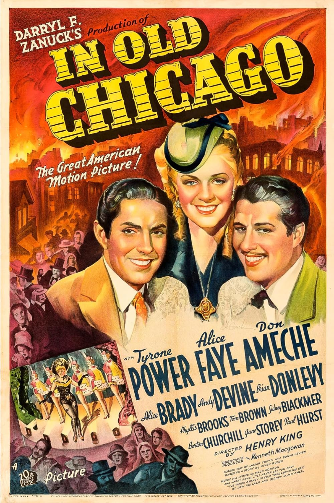

In Old Chicago
10th Academy Awards
(Oscars 1938)
6 Nominations, 2 Awards
| Nominations | ||
|---|---|---|
| Category | Nominees | Result |
| Outstanding Production | 20th Century-Fox | Nominated |
| Actress in a Supporting Role | Alice Brady | Won |
| Assistant Director | Robert Webb | Won |
| Writing (Original Story) | Niven Busch | Nominated |
| Sound Recording | E. H. Hansen | Nominated |
| Music (Scoring) | Louis Silvers | Nominated |